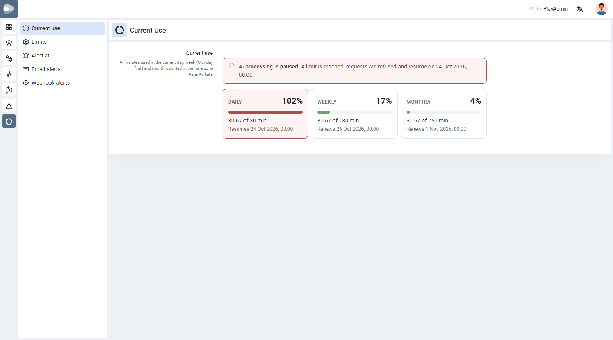
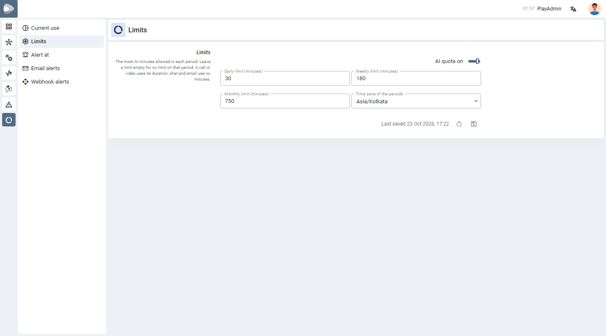
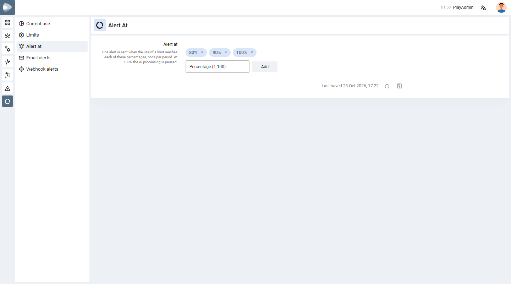
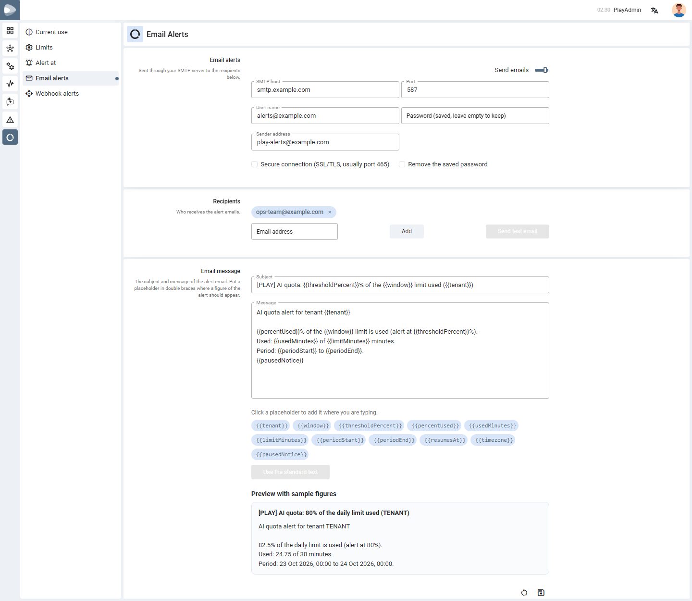
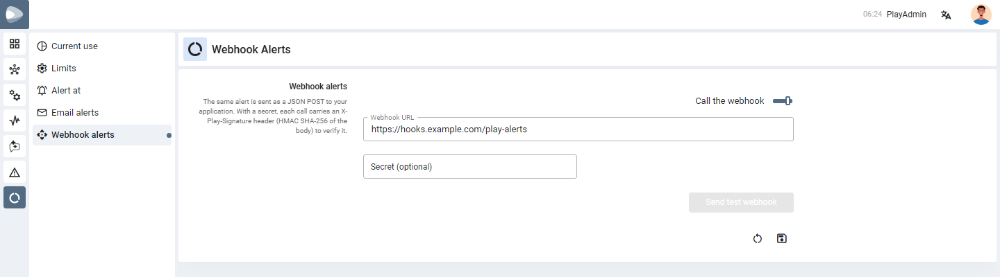

AI Quota
Decide how many minutes of AI processing your organisation may use each day, week and month, see how much is used right now, and get an email or a webhook call before the limit is reached.
01
What this feature does
A spending cap for AI, set in minutes.
Every call or video recording that PLAY sends to the AI back end uses minutes — the length of the recording. The AI Quota page lets you cap those minutes per day, per week and per month. When a cap is reached, PLAY stops sending new work to the AI until the period starts again, so the bill cannot run past what you planned.
- What uses minutes — speech to text and insights of calls and videos, counted by the length of the recording.
- What uses none — chat and email, and simply opening a summary, rating or translation that already exists.
- Periods — the day, the week (Monday first) and the month, counted in the time zone you choose.

02
Who can open it
Super admins only.
The AI Quota icon appears in the left bar only for the super admins of your installation — the users whose login id is in the list your PLAY administrator keeps in the Nucleus setting PLAY_SYS_SUPER_ADMIN_USER_NAME. Anyone else does not see the icon, and typing the address of the page takes them back to the home page.
PLAY_SYS_SUPER_ADMIN_USER_NAME to the Sys configuration of PLAY in Nucleus. The value is the login ids separated by commas, for example PlaySuAdmin, PlayAdmin (spaces and capital letters do not matter). The list is read when the PLAY service starts, so restart the service after changing it. With no value, nobody can open this page or the Reported Issues page.03
Current use
How much is used right now.
This is the first page. It shows one card for each period that has a limit:
| On the card | Meaning |
|---|---|
| The percentage | How much of the limit is used (it can go a little past 100%, see When a limit is reached). |
| The bar | The same figure as a bar — green while there is room, red once the limit is reached. |
| “30.67 of 30 min” | Minutes used so far in the period, and the limit. |
| “Renews …” / “Resumes …” | When the period starts again. While a limit is reached it says when AI processing resumes. |
A period with no limit shows only the minutes used. The page refreshes by itself while it is open.
04
Set the limits
Turn the quota on and enter the minutes.
-
Open LimitsClick Limits in the menu next to the page.
-
Switch AI quota onThe AI quota on switch applies the limits. While it is off, nothing is capped and the fields below are greyed out.
-
Enter the minutesType the Daily, Weekly and/or Monthly limit in minutes. Leave a field empty for no limit on that period.
-
Pick the time zoneChoose the Time zone of the periods. A new day, week and month begin at midnight in this zone.
-
SaveClick the Save icon at the end of the card. The round arrow beside it discards what you changed. A small dot next to a menu item shows that the page has unsaved changes.

05
Choose the alert percentages
Be told before the limit is reached.
On Alert at you list the percentages of a limit at which an alert is sent — by default 80, 90 and 100. Type a percentage from 1 to 100 and add it; remove one with the × on its chip. Each percentage is announced once per period, for each limit that reaches it.

06
Email alerts
Send the alert through your own mail server.
-
Switch Send emails onThen fill in your SMTP server: SMTP host, Port, User name, Password and the Sender address. Tick Secure connection for SSL/TLS (usually port 465); otherwise STARTTLS is used when the server offers it.
-
Add the recipientsType an email address and click Add. Up to 20 addresses are allowed; remove one with its ×.
-
Write the message (optional)Change the Subject and Message, and click a placeholder chip such as {{percentUsed}} to insert it where the cursor is. Preview with sample figures shows how it will read. Use the standard text brings the original wording back.
-
Save, then testClick Save, then Send test email to check that the mail arrives.

The saved password is never shown again: the box says Password (saved, leave empty to keep). Leave it empty to keep it, or tick Remove the saved password to delete it. The password is stored encrypted.
07
Webhook alerts
Send the same alert to your own application.
Switch Call the webhook on and enter the Webhook URL (an http or https address). PLAY sends each alert to it as a JSON POST. Click Send test webhook after saving to see that it arrives.
The Secret is optional. When you set one, every call carries an X-Play-Signature header — sha256= followed by the HMAC SHA-256 of the request body made with your secret — so your application can check that the call really came from PLAY. Every call also carries an X-Play-Event header with the value ai_quota_threshold.

08
When a limit is reached
What users and systems see.
- Every request that would use the AI — speech to text and insights, sentiment, summary, rating, translation — is refused with a message such as The AI quota is used up: 600 of 600 minutes for the daily limit. AI processing resumes 24 Oct 2026, 00:00 (Asia/Kolkata).
- This also stops the automatic processing of new recordings.
- Nothing has to be switched back on. The pause ends by itself when the period renews.
- Work that was already running when the limit was reached is allowed to finish, so a limit can be passed slightly.
09
Rules and limits
What PLAY checks when you save.
| Rule | Detail |
|---|---|
| Limit size | 0 to 10,000,000 minutes. Empty or 0 means no limit for that period. |
| Order of the limits | A shorter period cannot allow more than a longer one: daily ≤ weekly ≤ monthly. |
| Quota on | At least one limit must be set before you can turn it on. |
| Alert percentages | 1 to 10 whole numbers from 1 to 100. |
| When on: SMTP host, port, a valid sender address and at least one recipient are required; up to 20 recipients. | |
| Webhook | When on: a valid http or https address is required. |
| Who can change it | Administrators only on the server; the page itself is shown to super admins. |